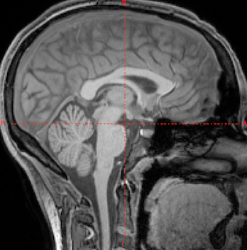

What is MRI?
MRI stands for Magnetic Resonance Imaging. MRI is a non-invasive imaging method that uses a strong magnetic field and radio waves to make images of your brain. No X-rays or ionizing radiation are used in the MRI. Your child will NOT be given any MRI contrast agents [chemicals that help imaging certain brain tissues or processes] or any other drugs in this study. The MRI scans are not intended to be diagnostic and do not replace a clinical MRI scan.

For a child-friendly video on how MRI works, please click here
Are there risks of MRI?
When you and your child arrive to our facilities, you will be greeted at the door by one of our researchers. We will briefly explain the day’s activities and ask you to sign a few pieces of paper, stating that you understand and agree to the voluntary research participation. Then, your child will be lead to a room by a researcher to begin participation! Participation includes, MRI , EEG , and other games. You will be lead to a comfortable waiting room, where we have many magazines, games, and refreshment options. After your child’s participation is finished, he or she will be rewarded with a small gift, and you will receive monetary compensation for your time.
What will my child do in the MRI?
You child will be asked to lie in our MRI machine for approximately 45 minutes but definitely not longer than 60 minutes. During each session, your child will be asked to keep his/her head still while MRI scans are completed.
During the experiment, your child will hear repetitive tapping noises from the machine and he/she will wear earplugs to reduce the noise. During certain scanning sequences, your child may also feel the table vibrate as part of its normal method of operation. Your child can watch a video of his/her choice inside the scanner to help lying quietly in the machine while scanning. Your child can bring his/her video or choose one from our selection of children DVDs such as Toy Story, Frozen etc.
What if my child gets scared?
You may choose to stay inside the MRI room with your child and hold his/her hand. If you choose to stay in the room, you will be offered earplugs to reduce the noise of the MRI scanner which produces loud thumping and humming noises during imaging.
Additionally, participation in all aspects of this study is voluntary. While we would love for every child to participate in the MRI scan, we are understanding of every child’s needs and wishes. If your child decides, at any point before or during the scan, that he or she does not want to participate anymore, we will remove them from the scanner immediately. A call button is provided such that your child may have the scan stopped at any time during the study.
How do I know that my child will be comfortable in the MRI?
Before we enter the MRI scanning room, we explain very thoroughly what the MRI experience will look, feel, and sound like. Your child will practice in a mock model of MRI machine, where we will make sure he or she feels completely comfortable and understands the process. During the scan, your child will be provided with blankets, pillows, and stuffed toys if desired. For the entire duration of the scan, your child will be able to talk to us and we will be able to talk to them. If your child wishes, we can stay in the scanner room with them.
What else should I know about MRI?
If your child has: a cardiac pacemaker; a metal clip in his/her body, a piece of metal in his/her eye she/he cannot have a MRI because the metal parts will be attracted by the magnet and will heat up. Any loose metallic object in your child’s body or in his/her pockets has to be removed because it will be attracted by the magnet and it will fly out of his/her pockets. This includes: key, jewelry, money clips, paper clips, safety pins, hairpins and barrettes. If you choose to stay inside the MRI scanning room during the session with your child, you will be asked to remove all metal and electronic objects prior to entering the MRI room. In addition, objects such as watches, credit cards and hearing aids could be damaged in the presence of magnetic field. A locker will be provided for you and your child to secure your items and valuables.
Have a concern/question/complaint?
Feel free to share any concerns, questions, suggestions for improvement or complaints with us. You can call us directly or you can send us an anonymous message through this form.